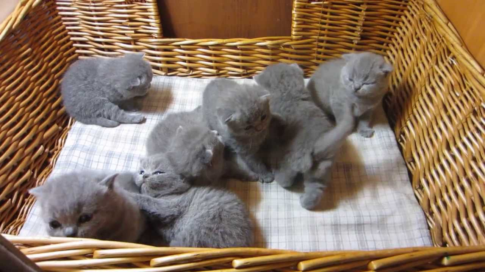
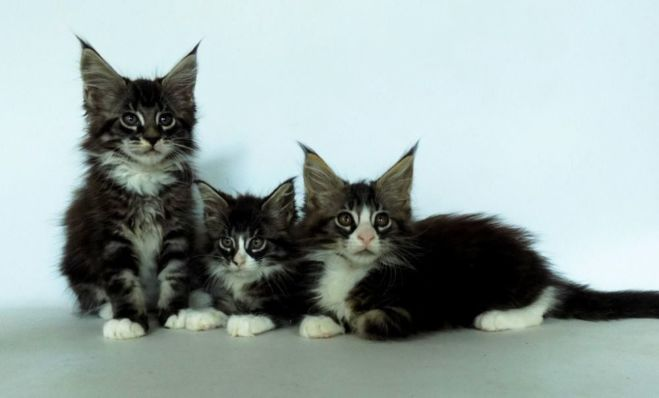

Сейчас есть в наличии:
 
Духовный мир кошки утончён и дик, он не раскрывается перед людьми, навязывающими животным свою любовь. Являясь одним из самых популярных животных-компаньонов, кошка находится в постоянном общении с человеком, в связи с чем её поведение подвержено его сильному воздействию. Но несмотря на это, кошки любят делать всё по-своему, «бродить, где вздумается» и «улизнуть в сумерки и порыскать по задворкам». Как и некоторые другие домашние животные, кошки и люди состоят в мутуалистических отношениях друг с другом. Несмотря на то, что кошки давно живут рядом с человеком, степень их одомашнивания является предметом спора. Первоначально дикому животному было предоставлено относительно безопасное существование в человеческом поселении в обмен на то, что кошка уничтожала крыс и мышей в зернохранилищах. В отличие от собак, которые также могут уничтожать грызунов, кошке не требовались овощи, фрукты и другая растительная пища. В сельской местности некоторые кошки могут даже выступать в роли пастухов. Часто люди держат кошек в качестве домашних питомцев и иногда заботятся о них, как о маленьких детях. Кошки могут привязываются к людям, а владельцы кошек иногда отличаются фанатичной привязанностью к своим питомцам. Если кошка очень привязана к своему хозяину, она может перенимать некоторые человеческие привычки, например - спать ночью, а не днем. Известны многочисленные примеры случаев, в которых кошки ожидают возвращения хозяина домой. Кошки могут выражать чувства и эмоции посредством мимики и взгляда. Методик опознания подобных мимических значений в настоящий момент не существует. Как правило, кошки хуже, нежели собаки, поддаются дрессировке, однако многие любители кошек учат своих питомцев различным трюкам, например, прыжкам по команде. Кошки часто выступают в цирке. Из-за малых размеров, в большинстве случаев, кошки не представляют опасности для человека, за исключением аллергии или инфекции (иногда бешенства), попадающей через расцарапанную кожу или со слюной при укусах. Из опасных для человека инфекций следует отметить токсоплазмоз, которым кошка может заразиться от мышей и крыс. Аллергия на ферменты, содержащиеся в кошачьей слюне, является наиболее распространённой причиной, по которой люди не могут содержать кошек. Для снижения эффекта от воздействия кошачьей слюны ветеринары рекомендуют ежедневно вычёсывать кошку и купать раз в шесть недель. Также помогают частая уборка в доме и установка воздухоочистителя. При игре с человеком хорошо воспитанные кошки обычно втягивают когти и дотрагиваются до человека только подушечками лап, однако иногда при игре кошка может неумышленно выпустить когти и нанести повреждение коже человека. Царапины от когтей могут легко воспалиться, особенно если кошки имеют доступ на улицу, и в отдельных случаях привести к так называемой болезни кошачьих царапин (доброкачественный лимфоретикулёз). Поэтому нанесённые кошкой царапины нуждаются в немедленной обработке дезинфицирующим средством.

После приобретение кошки, Вам необходимо позаботится о содержании и питании. Если вы приобрели котенка до 3 месяцев, Вам самостоятельно придется позаботиться о перовой его вакцинации. Но, ветеринарный паспорт, Вы можете получить и при покупке животного. Вакцинация. Привить питомца за первый год его жизни нужно 3 раза. Вакцинируют котят от панлейкопении, калицивироза, ринотрихиета, а некоторое вакцины включают в себя также хламидиоз. Всё это включено в одну вакцину. Первая вакцинация происходит в возрасте 2-3 месяца. Потом по истечению 21 дня, но не более 28 дней, делают повторную вакцинацию той же вакциной что и первый раз. Последнюю вакцинацию проводят годовалому котику. Трёх компонентная вакцина для котов стоит от 7$. Помимо прививок, котенка регулярно необходимо водить к ветеринару на осмотр. Придерживаясь его указаний и рекомендаций, Вам наверняка удастся вырастить здоровую, дающею хорошее потомство кошку. Питание для котов. Питанию кошки следует уделить особое внимание. Если Ваша кошка будет получать сбалансированную пищу, то она станет обладательницей красивой сияющей шерсти, крепких костей и когтей и блестящего взгляда. В принципе, их здоровье напрямую связано с тем, чем она питается. Например, недостаток туарина в организме взрослой кошки негативно сказывается на её репродуктивной системе. В больших количествах туарин содержится в рыбных продуктах и в говяжьем сердце. Кормить кошку можно и готовыми пищевыми кормами, которые разработаны специально для домашних любимцев. Магазинные корма, могут быть влажными и сухими. Такое питание полностью сбалансировано, в нем есть все необходимое для кошачьего здорового питания. Но всё-таки некоторые ветеринары не рекомендуют кормить котов исключительно лишь готовой продукцией. Сами по себе коты, это хищники. Рацион данного хищника в основном состоит из животных кормов, на воле это в основном мыши, птички ит.п. Если быть более конкретными, то дневной рацион Вашего питомца должен состоять на 70% из пищи животного происхождения (различные мясные продукты, исключение свинина) и на 30% из остального вида продуктов (творог, или творожное детское питание, овощи, крупы и т.д.). Мало кто знает, но коты в дикой природе едят исключительно свежую еду. Так, что следите, чтобы порции были такими, чтоб животное её наедалось за один прием пищи. Еда должна быть комнатной температуры, или на пару градусов теплее. Вода для питомца должна быть чистой и отстоянной. Воду меняйте 2-3 раза в день. Гигиена животного. Разумеется, что у каждой породы есть свои потребности в гигиене. К общим требованиям можно отнести следующее: